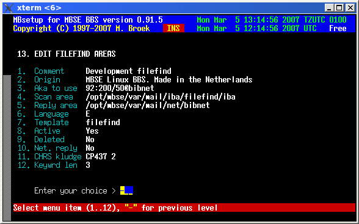

Last update 05-Mar-2007
MBSE BBS Setup - Filefind Areas.
Introduction.
The filefind idea on Fidonet came from the program Allfix written by Harald Harms. The idea is that a user writes a mail in a filefind area addressed to "Allfix" with in the subject line the items to search for. On all BBS'es with a filefind utility those programs try to find the requested files and then produce a reply of which files they have found. That reply can be in the same area, in a special reply echo or can be sent by netmail. Usually the user gets a lot of replies from which he can see if someone has the file(s) available he was searching for.
Filefind Setup.
Comment The comment for this area. Origin The origin line to use for the reply. Aka to use The Fidonet aka to use in this area. Scan area The JAM area in which to scan for requests. Reply area The JAM area to put the replies in, leave blank if in the same area. Language The language to use for the reply. Template The name of the macro template file. Active If this area is active. Deleted If this area must be deleted. Net. reply If the reply will be sent by netmail. CHRS kludge The CHRS kludge and encoding to use. Keywrd len The minimum keyword length allowed in search.

 Back to index
Back to index